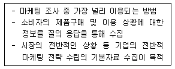
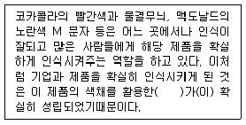
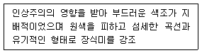
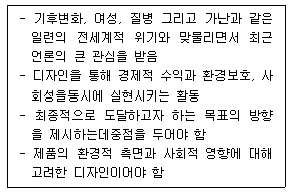
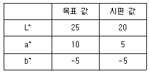
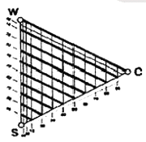

컬러리스트기사 (2014-03-02 기출문제)
1과목: 색채심리 마케팅
1. 마케팅의 원리와 관련한 설명으로 틀린 것은?
- 매슬로우는 인간의 욕구단계를 생리적, 안전, 사회적, 존경,자아실현 욕구로 구분하였다.
- 마케팅의 가장 기초는 기업중심적인 이윤추구 욕구이다.
- 마케팅은 만족시키는 대상에 대하여 표현되는 인간의 2차적 욕구(Wants)를 중요하게 다룬다.
- 기업은 새로운 개념과 제품, 서비스를 필요로 하는 인간의욕구 때문에 효과적인 마케팅을 필요로 한다.
(정답률: 55%)

2. 시장조사를 위하여 수집하는 자료는 그 특성에 다라 1차 자료와 2차 자료로 구분된다. 다음 중 2차 자료가 아닌 것은?
- 자사의 영업실적 자료
- 설문조사 자료
- 정부 간행물 자료
- 경제신문 통계자료
(정답률: 39%)
3. 마케팅 믹스에 대한 설명으로 옳은 것은?
- 시장을 세분화하는 방법
- 마케팅에서 경쟁 제품과의 위치 선정을 하기 위한 방법
- 마케팅에서 제품 구매 집단을 선정하는 방법
- 표적시장에서 원하는 결과를 얻기 위한 가능한 수단 활용방법
(정답률: 77%)
4. 시장세분화의 방법에 대한 설명으로 틀린 것은?
- 인구학적 세분화 : 연령, 직업 등으로 구분
- 지리적 세분화 : 지역, 도시, 인구밀도 등으로 구분
- 문화적 세분화 : 종교, 계층 등으로 구분
- 행동 분석적 세분화 : 경험, 성별, 가격 등으로 구분
(정답률: 67%)
5. 색채마케팅의 기능은?
- 대량 판매를 통한 문화 점유
- 직관적 색채사용을 통한 시장 우위확보
- 소비자의 1차적인 욕구충족을 통한 기업만족
- 고객만족과 경쟁력 강화
(정답률: 60%)
6. 디지털을 상징하는 대표색은?
- 노랑
- 빨강
- 청색
- 자주
(정답률: 70%)
7. 기업에서 마케팅의 변화 과정으로 적합한 표현은?
- 대량 마케팅 → 다양화 마케팅 → 표적 마케팅
- 표적 마케팅 → 다양화 마케팅 → 대량 마케팅
- 다양화 마케팅 → 표적 마케팅 → 대량 마케팅
- 대량 마케팅 → 표적 마케팅 → 다양화 마케팅
(정답률: 54%)
8. 마케팅 목적을 달성하는 환경을 조성하기 위하여 광고지면과시간을 어떻게 구성할 것인가를 결정하는 일련의 과정을무엇이라 하는가?
- 크리에이티브 전략
- 상황분석
- 1차 조사
- 매체계획
(정답률: 36%)
9. 능률향상을 위한 업무공간의 색채계획 효과로 옳은 것은?
- 영업직의 사무실은 한색계가 좋다.
- 사무의 집중도가 높은 사무직은 집중력을 촉진하는 난색계가좋다.
- OA 기기를 주로 사용하는 작업은 피로를 경감하는 난색계색채를 활용한다.
- 창조적인 사무가 많은 기획, 개발직은 난색계와 한색계가어우러진 다색계가 적당하다.
(정답률: 30%)
10. '다이나믹 코리아'라는 슬로건으로 우리나라를 홍보하는포스터 제작에 가장 적합한 배색은?
- 핑크, 화이트, 스카이 블루의 배색
- 블루, 레드, 블랙의 배색
- 그레이, 화이트, 베이지의 배색
- 블랙, 그레이, 브라운의 배색
(정답률: 89%)
11. 색채시장조사의 과정 중 매크로 환경을 조사할 때 중요한 내용 중의 하나가 유행색에 대한 정보의 수집과 분석이다.유행색에 대한 설명으로 틀린 것은?
- 유행색은 매 시즌 정기적으로 유행색을 발표하는 색채전문기관에 의해 예측되는 색이다.
- 색채에 있어 특정 스타일을 동조하고 그것이 보편화되어새로운 것을 추구하는 유행의 속성이 적용되면 유행색이 된다.
- 유행색은 어떤 일정기간 동안 특별히 많은 사람들이 선호하여 사용하는 색이다.
- 패션산업에서는 실 시즌의 약 1년 전에 유행예측색이 제안되고 있다.
(정답률: 70%)
12. 소비자 행동은 외적ㆍ환경적 요인과 내적ㆍ심리적 요인에영향을 받는다. 다음 중 소비자의 내적ㆍ심리적 영향 요인이아닌 것은?
- 경험, 지식
- 개성
- 동기
- 준거집단
(정답률: 74%)
13. 색채 지각에 관한 설명으로 틀린 것은?
- 색채는 심리적 효과를 제공하는데 비해 사물의 윤곽을 파악하는 데는 부적절하다.
- 주관적인 색채경험을 활용한 예를 옵아트(Opt Art)에서볼 수 있다.
- 대상의 표면색에 대해 무의식적 추론에 의해 결정되는 색채를 기억색이라 한다.
- 빛 자극의 물리적 특성이 변화하더라도 사물을 같은 색으로보는 것은 색의 항상성 때문이다.
(정답률: 54%)
14. 색채의 공감각 중 촉감에 관한 설명으로 틀린 것은?
- 밝은 핑크는 부드러운 느낌을 준다.
- 한색 계열은 난색 계열에 비하여 촉촉한 느낌을 준다.
- 밝고 채도가 높은 색채는 강하고 딱딱한 느낌을 준다.
- 난색 계열은 한색 계열에 비하여 건조한 느낌을 준다.
(정답률: 48%)
15. 색채 시장 조사 기법 중 보기에서 설명하는 것은?

- 서베이 조사
- 패널 조사
- 관찰 조사
- 방법론 조사
(정답률: 67%)
16. 색채 선호의 원리를 설명한 것으로 틀린 것은?
- 세계적으로 공통된 선호색 1위는 빨간색이다.
- 색채선호는 문화적, 지역적, 연령별로 차이가 있으나일반적으로 공통된 감성이 있다.
- 제품의 색채선호는 고정된 것이 아니라 신소재, 디자인, 유행에 따라 변화한다.
- 남성과 여성의 선호색이 다르므로 구매자의 선호색채를 사용하면 마케팅 효과가 있다.
(정답률: 84%)
17. 소비자 의사결정에 영향을 미치는 요인으로 개인적 요인에해당하지 않는 것은?
- 동기(Motive)
- 학습(Learning)
- 가족(Family)
- 개성(Personality)
(정답률: 77%)
18. 다음 중 국제적 언어로 인지되는 색채와 기호의 사례가 들린 것은?
- 빨간색 소방차
- 녹색 십자가의 구급약품 보관함
- 노랑 바탕에 검정색 추락위험 표시
- 마실 수 있는 물의 파란색 포장
(정답률: 54%)
19. 사용된 색에 따라 우울해 보이거나 따뜻해 보이거나 고가로보이는 등의 심리적 효과는?
- 색의 보편성
- 색의 조화
- 색의 연상
- 색의 유사성
(정답률: 72%)
20. 보기의 ( )에 들어갈 적합한 것은?

- Brand Identity
- Brand Level
- Brand Price
- Brand Slogan
(정답률: 73%)
2과목: 색채디자인
21. 형태심리학자들에 의해서 제시된 시지각 법칙이 아닌 것은?
- 근접성의 원리
- 유사성의 원리
- 연속성의 원리
- 대조성의 원리
(정답률: 67%)
22. 다음 중 리디자인(Re-Design)의 개념은?
- 신제품의 디자인 개발
- 제품디자인의 개선
- 판매를 위한 디자인 개발
- 제품판매를 위한 판촉활동
(정답률: 82%)
23. 다음 중 르네상스 시대에 건축가와 화가들이 즐겨 사용했으며, 근대에는 르 코르뷔제가 건축구조물 등에 적용하였고, 오늘날 예술 영역에서 가장 널리 사용되는 비례체계는?
- 펠 수열
- 황금분할
- 산술적 비례
- 기하학적 비례
(정답률: 82%)
24. 다음 중 선의 종류와 특징이 틀린 것은?
- 곡선 - 자유, 우아, 고상, 불명확, 섬세
- 직선 - 상승, 형식, 도전, 중력, 긴장감
- 절선 - 격동, 불안감, 초조
- 사선 - 무기력, 수동적, 우유부단
(정답률: 64%)
25. 도구의 개념으로 물건을 창조하는 분야는?
- 시각디자인
- 제품디자인
- 환경디자인
- 건축디자인
(정답률: 92%)
26. 보기에서 설명하는 디자인 사조는?

- 다다이즘
- 아르누보
- 포스트모더니즘
- 아르데코
(정답률: 80%)
27. 환경매체에 대한 설명 중 틀린 것은?
- 빛이나 움직임을 이용할 수 있다.
- 지역적 융통성을 발휘할 수 있다.
- 반복성이 높고 정독률이 높다.
- 중요한 지형지물로서도 인식될 수 있다.
(정답률: 77%)
28. CI(Corporate Identity)의 설명 중 가장 적절한 것은?
- 회사의 경영방침
- 기업의 전략적 이미지 통합
- 상품의 개발전략
- 디자인 제품의 판매정책
(정답률: 72%)
29. 디자인의 원리인 조화에 대한 설명 중 틀린 것은?
- 디자인의 조화는 부분의 상호관계가 서로 분리되거나배척하지 않는 상태를 말한다.
- 유사조화는 변화의 다른 형식이라고 할 수 있다.
- 디자인의 조화는 여러 요소들의 통일과 변화의 정확한배합과 균형에서 온다.
- 조화는 크게 유사조화와 대비조화로 나눌 수 있다.
(정답률: 40%)
30. 다음의 디자인 사조들이 대표적으로 사용하였던 색채의 경향이 틀린 것은?
- 옵아트는 색의 원근감, 진출감을 흑과 백 또는 단일색조를강조하여 사용한다.
- 아르누보는 큐비즘의 영향을 받아, 차분하고 자연적인 색채를 사용하며, 공간적이고 입체적인 색채의 효과를강조한다.
- 다다의 색은 화려한 면과 어두운 면을 동시에 갖고 있으면서, 극단적인 원색대비를 사용하기도 한다.
- 데스틸은 기본 도형적 요소와 삼원색을 활용하여 평면적표현을 강조한다.
(정답률: 60%)
31. 노인들을 위한 환경의 색채 계획에 대한 설명이 틀린 것은?
- 회색 계열보다 노랑 계열의 벽이 노인들에게 쉽게 인식될 수있다.
- 색의 대비는 환자의 감각을 풍요롭게 하므로 효과적이다.
- 건강 관련 시설에서의 무채색은 환자의 건강회복에 도움이되지 않는다.
- 사람들은 색에 대해 동일한 의미와 감정으로 반응한다.
(정답률: 59%)
32. 색조에 의한 패션디자인 계획 중 deep, dark, dark graish와관련이 없는 것은?
- 전체적으로 화려함이 없고 단단하며 격조있는 느낌
- 안정되면서도 무거운 남성적 감정을 느끼게 함
- 복고품의 패션트렌드와 어울리는 색조
- 주로 스포츠웨어나 테마의상 제작에 사용
(정답률: 50%)
33. 병원 수술실의 색채계획과 관련이 없는 것은?
- 잔상현상
- 집중적 색채
- 벽면의 유목성
- 조명의 색온도
(정답률: 72%)
34. 색채계획의 일반적인 원칙을 적용한 경우의 설명으로적합하지 않는 것은?
- 문이나 가리개는 벽면과 동일한 색을 사용하는 것이가장 좋다.
- 넓은 면적을 차지하는 색의 채도는 낮추는 것이 좋다.
- 홀이나 로비 같은 활동적인 공간에는 난색계열을 사용하는것이 좋다.
- 실내공에서 천정은 벽이나 바닥보다 밝게 하는 것이 좋다.
(정답률: 72%)
35. 패션디자인 색채계획에 대한 설명으로 틀린 것은?
- 색채계획이란 디자인에 있어 용도나 재료를 바탕으로 기능적으로 아름다움 배색효과를 얻을 수 있도록 계획하는것이다.
- 패션색채의 배색계획은 두 가지 이상의 색상이 조화되어 전체적인 디자인 효과를 상승시키는 것이다.
- 패션색채의 배색은 크게 색상배색과 색조배색으로 나눌 수있다.
- 패션디자인 색채 계획은 우선적으로 유행정보에 대한 분석이이루어져야 한다.
(정답률: 13%)
36. 다음 중 미용색채계획 과정에서 가장 중요하며 처음으로 실시되는 단계는?
- 주조색, 보조색, 강조색의 결정
- 대상의 위생검증
- 이미지맵 작성
- 대상의 특징분석
(정답률: 58%)
37. 디자인의 요소에 대한 설명으로 옳은 것은?
- 형은 일정한 크기, 색채, 질감을 가진 모양이다.
- 소극적인 면은 점의 확대, 선의 이동, 너비의 확대 등에 의해서 성립된다.
- 형태는 이념적 형태, 순수형태, 추상형태로 분류할 수 있다.
- 이념적인 형은 그 자체만으로 조형이 될 수 없으므로 지각하여 얻어낼 수 있도록 표현한다.
(정답률: 47%)
38. 다음 중 미국을 중심으로 발전된 사조로 묶인 것은?
- 팝아트, 구성주의
- 키치, 다다이즘
- 키치, 아르데코
- 아르데코, 팝아트
(정답률: 36%)
39. 보기에서 설명하는 디자인 분야는?

- 그린 디자인
- 지속가능한 디자인
- 유니버설 디자인
- UX 디자인
(정답률: 24%)
40. 형태구성 부분간의 상호관계에 있어 반복, 점증, 강조 등의요소를 사용하여 생명감과 존재감을 나타내는 디자인원리는?
- 조화
- 균형
- 비례
- 리듬
(정답률: 알수없음)
3과목: 색채관리
41. 육안검색 시 유의사항 중 옳은 것은?
- 관찰자는 색채 경험이 많이 있는 사람만 해야 한다.
- 높은 채도에서 낮은 채도의 순서로 검사하는 것이 좋다.
- 마스크를 사용할 때는 비교색에 가장 보색인 채도를 가진것으로 한다.
- 마스크는 광택이나 형광이 없는 무채색이 좋다.
(정답률: 79%)
42. 다음 표와 같이 목표 값과 시편 값이 나왔을 경우 시편 값의보정방법은?

- 빨간색 도료를 이용하여 색상을 보정하고 흰색을 이용하여밝기를 조정한다.
- 노란색 도료를 이용하여 색상을 보정하고 검은색을 이용하여 밝기를 조정한다.
- 녹색 도료를 이용하여 색상을 보정하고 검은색을 이용하여밝기를 조정한다.
- 파란색 도료를 이용하여 색상을 보정하고 흰색을 이용하여밝기를 조정한다.
(정답률: 34%)
43. 물체의 색을 측정하는 방법 중 0/d에 관한 설명이 옳은 것은?
- 수직으로 입사시키고 분산광을 관측
- 분산광을 입사시키고 수직방향에서 관측
- 물체면에 수직 입사시키고 45도 방향에서 관측
- 물체면에 수직 입사시키고 수직방향에서 관측
(정답률: 34%)
44. 광측정량의 단위에 대한 설명 중 틀린 것은?
- 광도 : 광원에서 단위 입체각으로 발산하는 광선속량이다.단위는 cd/m2이다.
- 조도 : 단위면적에 입사하는 광선속으로 정의되며, 단위는 lx 이다.
- 휘도 : 단위면적에서 단위 입체각으로 복사하는 광선속으로정의된다. 단위는 fl 등이 있다.
- 전광속 : 광원이 사방으로 내는 빛의 총 에너지로 단위는 lm을 사용한다.
(정답률: 15%)
45. 디지털 색채의 특징을 설명한 것 중 틀린 것은?
- 디지털 색채는 가법혼색과 감법혼색 체계를 기본으로 한다.
- 디지털 색채에서의 가법혼색은 빛의 삼원색을 다양한비율과 강도로 혼합하여 만들어진다.
- 디지털 색채는 혼색계와 현색계의 특성을 모두 갖는다.
- 모니터, 프린터와 같은 디지털 색채 장치는 동일한 혼색원리이다.
(정답률: 알수없음)
46. 필터식 색채측정 장치에서 빛을 전기적 신호로 바꾸는 역할을하는 곳은?
- 광원 측정용 스크린
- 광전달 섬유
- 광검출기
- 집광렌즈
(정답률: 47%)
47. 색역사상(Gamut Mapping)에 대하여 옳게 설명한 것은?
- 색역이 일치하지 않는 색채장치 간에 색채의 구현이 효과적으로 이루어지도록 색채표현 방식을 조절하는 기술이다.
- 인간이 느끼는 색채보다도 측색값이 일치하도록 하는 것을주된 목적으로 실행된다.
- 색 영역 바깥의 모든 색을 색 영역 가장자리로 옮기는 것이색 영역 압축방법이다.
- CMYK 색공간이 RGB 색공간보다 넓기 때문에 CMYK에서 재현된색을 RGB 공간에서 수용할 수가 없다.
(정답률: 58%)
48. K/S 흡수, 반사를 이용한 조색의 원리와 관계된 사람은?
- 쿠벨카 문크
- 먼셀
- 헤링
- 베졸트
(정답률: 42%)
49. 쿠벨카 문크 이론의 배색처방 기본 원리에 대한 설명 중틀린 것은?
- 섬유류의 경우 빛을 산란시키는 기능을 가지고 있으므로, 흡수계수와 산란계수의 비율로 주어지는 1개 상수 쿠벨카 문크 이론을 적용한다.
- 플라스틱이나 페인트의 경우 재질 속에 빛을 산란시키는 기능이 없으므로, 흡수계수와 산란계수를 각각 사용하는 2개 상수 쿠벨카 문크 이론을 적용한다.
- 1개 상수 쿠벨카 문크 이론에서 흡수계수와 산란계수의비율은 주어진 파장의 반사율에 무관하게 주어진다.
- 1개 상수 쿠벨카 문크 이론에서 흡수계수와 산란계수의 비율은 염료의 농도에 비례한다.
(정답률: 17%)
50. 다음 중 디지털 이미지의 컬러모드에 속하지 않는 것은?
- Grayscale
- Targa
- Duotone
- Bitmap
(정답률: 45%)
51. 다음 중 천연수지 도료에 대한 설명으로 옳은 것은?
- 아교, 카세인류를 전색제로 한다.
- 내알카리성이기 때문에 콘크리트나 모르타르의 마무리 도료에 많이 쓰인다.
- 옻, 캐슈계 도료, 유성페인트, 유성에나멜, 주정도료 등이대표적이다.
- 미립자의 염화비닐수지에 가소제를 혼합하여 만든 페이스트를 도포한 후 가열 용융하여 도막을 만드는 도료를말한다.
(정답률: 50%)
52. 다음 중 옵셋 인쇄에 관한 설명 중 옳은 것은?
- 석판술(Lithography)과 같이 물과 기름이 서로 섞이지 않는원리를 이용해서 인쇄하는 방식이다.
- 판(Plate)에 묻은 잉크가 종이와 직접 접촉하여 옮겨짐으로써 인쇄된다.
- C, M, Y, K 잉크의 순서대로 인쇄된다.
- 크게 Sheet-fed Offset과 Heatset Offset방식으로 나누어진다.
(정답률: 20%)
53. 육안검색 측정 환경에 대한 설명으로 옳은 것은?
- 조명의 부스를 사용하는 경우 무광택의 N5 ~ 8인 무채색이어야 한다.
- 비교되는 색은 일정 거리를 유지하고 동일 평면에 놓이지않게 유의한다.
- D50 광원을 사용하여 조도 1000Lx의 밝기를 갖춘 인공광원에서 실시한다.
- 자연광을 이용하는 경우 정오의 직사광원을 이용하는 것이효과적이다.
(정답률: 28%)
54. 디지털 컬러에서 입력장치나 디스플레이 장치에 주로 사용되는 3원색은?
- Red, Blue, Yellow
- Yellow, Cyan, Red
- Blue, Green, Magenta
- Red, Green, Blue
(정답률: 74%)
55. 다음 중 CIE L*a*b* 색체계에서 a*에 해당되는 색의 영역을가장 옳게 나타낸 것은?
- Red ~ Blue
- Yellow ~ Blue
- Red ~ Green
- Red ~ Yellow
(정답률: 54%)
56. 화상에 비쳐진 상태를 판단하므로 비교적 고광택도의표면검사에 이용되는 평가방법은?
- 대비 광택도
- 선명도 광택도
- 변각광도분포
- 경면 광택도
(정답률: 9%)
57. 다음 중 아이소머리즘(Isomerism)에 대한 설명으로 옳은 것은?
- 분광반사율이 달라도 같은 색자극을 일으키는 현상을 말하며주로 육안조색 시 발생한다.
- 일반적으로 육안으로 조색을 하는 경우 나타나는 현상으로관측자마다 색이 달라져 보인다.
- 광원이 바뀌면 색이 달라져 보이는 현상이다.
- 분광반사율이 일치하여 어떠한 광원, 관측자에게도 같은색으로 보인다.
(정답률: 39%)
58. 스캐너와 디지털 카메라의 특성화 과정에서 기본적으로 사용되는 샘플 컬러 패치는 IT8 차트이다.이 차트를 지정한 단체는?
- ICC(International Color Consortium)
- ISCC(Inter-Society Color Council)
- ISO(International Standards Organization)
- ICA(International Color Association)
(정답률: 36%)
59. 백색표준판(White Reference Plate)에 대한 설명이 틀린 것은?
- 백색표준판은 측색기의 측정값을 보증하기 위한 측정기준 인증물질(CRM : Certified Reference Material)로정기적으로 교정을 받아야 한다.
- 측색기 구입 시 제조사에서 제공하는 백색 표준판은 필요에따라 다른 백색표준판과 병행하여 사용할 수 있다.
- 백색표준판이 손상되거나 오염되었을 경우는 제조사에 재교정을 의뢰해야 한다.
- 백색표준판의 측정방식은 색채계의 측정방식과 일치하는기준물의 교정성적을 사용해야 한다.
(정답률: 43%)
60. 색료를 사용방법에 따라 분류하고 고유의 숫자로 표시하는 것은?
- CRI
- MI
- CII
- WI
(정답률: 알수없음)
4과목: 색채지각론
61. 색채지각과 감정효과가 옳게 연결된 것은?
- R : 진출색 - 팽창색 - 흥분색
- VR : 진출색 - 수축색 - 진정색
- B : 후퇴색 - 수축색 - 흥분색
- PB : 후퇴색 - 팽창색 - 진정색
(정답률: 73%)
62. 색채에 대한 느낌을 가장 옳게 표현한 것은?
- 빨강, 주황, 노랑 등의 색상은 경쾌하고 시원함을 느끼게 한다.
- 장파장 계통의 색은 시간의 경과가 느리게 느껴지고, 단파장계통의 색은 시간의 경과가 빠르게 느껴진다.
- 한색계열의 저채도 색은 심리적으로 침정되는 느낌을 준다.
- 색의 중량감은 주로 채도에 의하여 좌우된다.
(정답률: 24%)
63. 동일한 양의 두 색을 혼합하여 만들어지는 새로운 색을무엇이라 하는가?
- 인접색
- 반대색
- 일차색
- 중간색
(정답률: 67%)
64. 색의 진출과 후퇴 현상에 대한 일반적인 내용으로 잘못된것은?
- 적색, 황색과 같은 난색은 진출해 보인다.
- 단파장 쪽의 색이 후퇴해 보인다.
- 고명도의 색이 진출해 보인다.
- 고채도의 색이 후퇴해 보인다.
(정답률: 알수없음)
65. 빛 자극의 물리적 특성이 변화하더라도 물체의 색채가 변하지한고 그대로 지각되는 색채감각과 관련이 깊은 것은?
- 기억색(Memory Color)
- 기호색(Preference Color)
- 주관색(Subject Color)
- 대응색(Opponent Color)
(정답률: 58%)
66. 다음 색채대비 주 스테인드글라스에 많이 사용되고, 현대화에서는 칸딘스키, 피카소 등이 많이 사용한 방법은?
- 채도대비
- 명도대비
- 색상대비
- 면적대비
(정답률: 50%)
67. 표면에 입사되는 모든 파장의 빛을 거의 다 흡수하는 물체의색은?
- 은색
- 회색
- 흰색
- 검정색
(정답률: 65%)
68. 색채현상에서 나타나는 빛의 성질에 대한 설명이 틀린 것은?
- 흡수 : 빛이 물리적으로 기체나 액체나 고체 내부에 빨려들어가는 현상
- 굴절 : 파동이 한 매질에서 다른 매질로 향해 이동할 때경계면에서 일부 파동이 진행방향을 바꾸어 원래의 매질안으로 되돌아오는 현상
- 투과 : 광선이 물질의 내부를 통과하는 현상으로 흡수나 산란없이 빛의 파장범위가 변하지 않고 매질을 통과함을 의미함
- 산란 : 거친 표면에 빛이 입사했을 경우 여러 방향으로 빛이분산되어 퍼져나가는 현상
(정답률: 53%)
69. 영ㆍ 헬름홀츠의 색지각설에 대한 설명 중 틀린 것은?
- 우리 눈의 망막 조직에는 빨강, 초록, 파랑의 색지각 세포가있다.
- 가법혼색의 삼원색의 기초가 된다.
- 빨강과 파랑의 시세포가 동시에 흥분하면 마젠타의 색각이지각된다.
- 잉크젯프린터의 혼색원리이다.
(정답률: 55%)
70. 양복지와 같은 직물은 몇 가지 색실로 다양한 색상을 만들어내고 있다. 이에 관련된 혼색방법이 아닌 것은?
- 가법혼색
- 감법혼색
- 병치혼색
- 중간혼색
(정답률: 24%)
71. 도로 안내 표지를 디자인할 때 가장 중점을 두어야 하는 것은?
- 배경색과 글씨의 보색대비 효과를 고려한다.
- 배경색과 글씨의 명도차를 고려한다.
- 배경색과 글씨의 색상차를 고려한다.
- 배경색과 글씨의 채도차를 고려한다.
(정답률: 65%)
72. 다음 중 회전 혼합의 특징이 아닌 것은?
- 보색이나 준보색 관계의 색을 회전 혼합시키면 무채색으로보인다.
- 회전 혼합은 평균 혼합으로서 명도와 채도가 평균값으로지각된다.
- 색료에 의해서 혼합되는 것이므로 계시가법혼색에 속하지않는다.
- 채도가 다르고 같은 명도일 때는 채도가 높은 쪽의 색으로기울어져 보인다.
(정답률: 50%)
73. 노란 색종이를 조그맣게 잘라 여러 가지 배경색 위에 놓았다.다음 어떤 배경색에서 가장 선명한 노란색으로 보이는가?
- 주황색
- 연두색
- 파란색
- 빨강색
(정답률: 알수없음)
74. 두 개 이상의 투명 셀로판지를 겹쳤을 때 보여지는 색혼합은?
- 동시가법혼색
- 계시가법혼색
- 동시감법혼색
- 계시감법혼색
(정답률: 알수없음)
75. 선글라스를 끼고 있는 동안 선글라스의 색이 느껴지지 않는이유는?
- 무채순응 때문
- 색순응 때문
- 명암순응 때문
- 푸르킨예 현상 때문
(정답률: 43%)
76. 컬러인쇄물의 혼색에 관한 내용 중 틀린 것은?
- 노랑, 시안, 마젠타와 검정으로 다양한 색을 연출한다.
- 감법혼색과 병치혼색의 원리가 함께 응용된다.
- 노랑과 마젠타의 색점이 겹쳐진 부분은 두 색의 평균 밝기로나타난다.
- 망점을 사용하여 중간 색조를 얻는 경우는 색의 농담을 망점의 크기로 나타낸다.
(정답률: 42%)
77. 색의 감정효과에 대한 설명 중 틀린 것은?
- 색의 온도감이 높은 순서는 빨강, 주황, 노랑, 연두, 파랑, 하양이다.
- 파장이 긴 쪽이 따뜻하게 느껴지고 파장이 짧은 쪽이 차갑게느껴진다.
- 색의 온도감은 색의 세 가지 속성 중에서 명도에 주로 영향을 받는다.
- 연두, 녹색, 보라, 자주 등은 때로는 차갑게 때로는따듯하게 느껴지는데 이렇게 중간 온도의 느낌을 주는 색을중성색이라고 한다.
(정답률: 57%)
78. 물리적, 생산적 원인에 따른 색채 지각변화에 대한 설명 중옳은 것은?
- 망막의 지체현상은 약한 빛 아래서 운전하는 사람의 반응시간을 짧게 만든다.
- 망막 수용기에 의해 지각된 색은 지배적 주변상황에서 오는변수에 따른 반응이 사람마다 동일하다.
- 빛 강도가 해질녘의 경우처럼 약할 때는 망막의 화학적변화가 급속히 일어나 시자극을 빠르게 받아들인다.
- 빛의 강도가 주어진 최소수준 아래로 떨어질 경우 스펙트럼의 단파장과 중파장에만 민감한 간상체가 작용하기시작한다.
(정답률: 70%)
79. 다음 중 잔상과 관련이 없는 것은?
- 맥컬로 효과(MaCollough Effect)
- 페히너의 코마(Fechner's Comma)
- 허먼 그리드 현상(Hermann Grid Illusion)
- 베졸트 브뤼케 현상(Bezold-Bruke Phenomenon)
(정답률: 25%)
80. 색의 주목성에 대한 설명이 틀린 것은?
- 고명도, 고채도의 색이 주목성이 크다.
- 주목성은 사람의 시선을 끄는 힘이다.
- 주로 한색 계통이 주목성이 크다.
- 빨간색은 주의, 알림, 경고 등의 기능을 가지게 된다.
(정답률: 74%)
5과목: 색채체계론
81. 배색기법에 대한 설명이 틀린 것은?
- 기조색은 색채계획에서 의도적으로 설정한 주제를 상징하는색이다.
- 강조색은 주조색과 보조색을 조화롭게 하기 위해 사용되기도한다.
- 보조색은 배색의 지루함을 덜기 위해서 사용한다.
- 주조색은 직접 사용된 색이며 가장 많은 면에서 주도적인역할을 한다.
(정답률: 39%)
82. 다음의 DIN 색표기 중 색채의 순도(채도)가 가장 높은 것은?
- 2 : 3 : 3
- 12 : 5 : 3
- 3 : 9 : 3
- 2 : 1 : 6
(정답률: 24%)
83. 톤에 대한 개념 설명으로 옳은 것은?
- 명도와 채도의 복합개념으로 색도라고도 한다.
- 색채 이미지 전달이 어렵다.
- 색채의 복합속성이 아니다.
- 색상과 채도의 복합개념으로 색도라고도 한다.
(정답률: 25%)
84. 색상을 기준으로 등거리 2색, 3색, 4색, 5색, 6색 등으로 분할하여 배색하는 기법을 설명한 색채학자는?
- 문ㆍ스펜서
- 오그덴 루드
- 요하네스 이텐
- 저드
(정답률: 40%)
85. L*a*b* 색공간에 L*값이 동일한 a*b* 색도그림을 가정할 때,중심에서 멀어질수록 나타나는 현상은?
- 명도가 낮은 색이 된다.
- 명도가 높은 색이 된다.
- 채도가 낮은 색이 된다.
- 채도가 높은 색이 된다.
(정답률: 39%)
86. 그림에서 굵게 표시된 부분의 속성이 의미하는 것은?

- 동일 명도
- 동일 채도
- 동일 검정색도
- 동일 하양색도
(정답률: 47%)
87. 오스트발트의 색채조화론과 관련한 설명이 틀린 것은?
- 무채색은 등간격이면 조화가 된다.
- 등백계열의 색과 그 선상의 무채색과는 조화가 된다.
- 질서있게 변하는 색끼리는 조화된다.
- 동일 색삼각형에서 순도가 다른 색은 조화가 된다.
(정답률: 50%)
88. 음양오행설에서 풀어낸 오정색은 다섯 가지 방위를 나타낸다.동, 서, 남, 중앙, 북의 방위와 오정색이 순서대로 옳게 나열된 것은?
- 청색, 백색, 적색, 황색, 흑색
- 흑색, 황색, 적색, 백색, 청색
- 적색, 흑색, 청색, 황색, 백색
- 백색, 흑색, 청색, 적색, 황색
(정답률: 79%)
89. CIE L*a*b* 색공간의 설명으로 틀린 것은?
- -a* 값의 색은 초록의 포함정도를 나타낸다.
- a*와 b*는 색도좌표를 나타낸다.
- +a*=35, -b*=50의 색은 연두색이다.
- L* 값은 명도이고 숫자가 높을수록 밝은 색이다.
(정답률: 62%)
90. CIE 색체계의 특성이 아닌 것은?
- 동일 색상을 찾기 쉬워 색채 계획 시 유용하다.
- 인쇄로 표현할 수 있는 색의 범위가 한정적이다.
- 색을 과학적이고 객관성 있게 지시할 수 있다.
- 최종 좌표값들의 활용에 있어 인간의 색채시감과 거리가있다.
(정답률: 24%)
91. 관용색명이라고 볼 수 없는 것은?
- 곤색
- 하늘색
- 흰색
- 금색
(정답률: 22%)
92. NCS의 색표가 S7020-R30B에서 70, 20, 30의 숫자가 의미하는속성이 옳게 나열된 것은?
- 유채색도 - 검정색도 - 빨간색도
- 유채색도 - 검정색도 - 파란색도
- 검정색도 - 유채색도 - 빨간색도
- 검정색도 - 유채색도 - 파란색도
(정답률: 40%)
93. 다음 중 먼셀색체계의 장점은?
- 색상별로 채도 위치가 동일하여 배색이 용이하다.
- 색상사이의 완전한 시각적 등간격으로 수치상의 색채와 실제 색감과의 차이가 없다.
- 정량적인 물리값의 표현이 아니고 인간의 공통된 감각에 따라 설계되어 물체색의 표현에 용이하다.
- 인접색과의 비교에 의한 상대적 개념으로 확률적인 색을 표현하므로 일반인들이 사용하기 쉽다.
(정답률: 15%)
94. 오스트발트 색체계의 기본 4색은?
- Yellow, Red, Ultra Marine Blue, Sea Green
- Yellow, Red, Blue, Green
- Yellow, Red, Blue, Turquoise
- Yellow, Red, Blue, Orange
(정답률: 38%)
95. 한국전통색명 중 색상계열이 다른 하나는?
- 감색(紺色)
- 벽색(碧色)
- 숙람색(熟藍色)
- 장단(長丹)
(정답률: 47%)
96. 오스트발트 색체계의 설명 중 틀린 것은?
- 색상의 분할에 있어서 영ㆍ헬름홀쯔의 3원색설을 기본으로하고 있다.
- 독일의 물리화학자인 F.W. 오스트발트가 제안했다.
- 백ㆍ흑ㆍ순색의 혼합에서 각 함유량으로 표면색을 정량적으로 표시하기 위한 방법이다.
- 같은 기호의 색일지라도 색상에 따라서 시감의 차이가 있다.
(정답률: 40%)
97. PCCS 색체계의 색상환에 대한 설명 중 틀린 것은?
- 적, 황, 녹, 청의 4색상을 중심으로 한다.
- 4색상의 심리보색을 색상환의 대립위치에 놓는다.
- 색상을 등간격으로 보정하여 36색상환으로 만든다.
- 색광과 색료의 3원색을 모두 포함한다.
(정답률: 47%)
98. 병치혼색과 보색 등의 대비를 통해 그 결과가 혼란된 것이아닌 주도적인 색으로 보일 때 조화된다는 이론은?
- 파버비렌의 색채조화론
- 저드의 색채조화론
- 쉐뷰럴의 색채조화론
- 루드의 색채조화론
(정답률: 19%)
99. 다음 중 색채표준방법이 나머지와 다른 것은?
- RGB 색체계
- XYZ 색체계
- CIE L*a*b* 색체계
- NCS 색체계
(정답률: 25%)
100. 다음 중 먼셀 색체계의 설명으로 옳은 것은?
- 무채색은 H V/C의 순서로의 순서로 표기한다.
- 헤링의 반대색설에 따라 색상환을 구성하였다.
- 색의 3속성에 의한 표시방법으로 한국산업표준(KSA0062)에채택되었다.
- 흰색, 검정색과 순색의 혼합에 의해 물체색을 체계화 하였다.
(정답률: 37%)